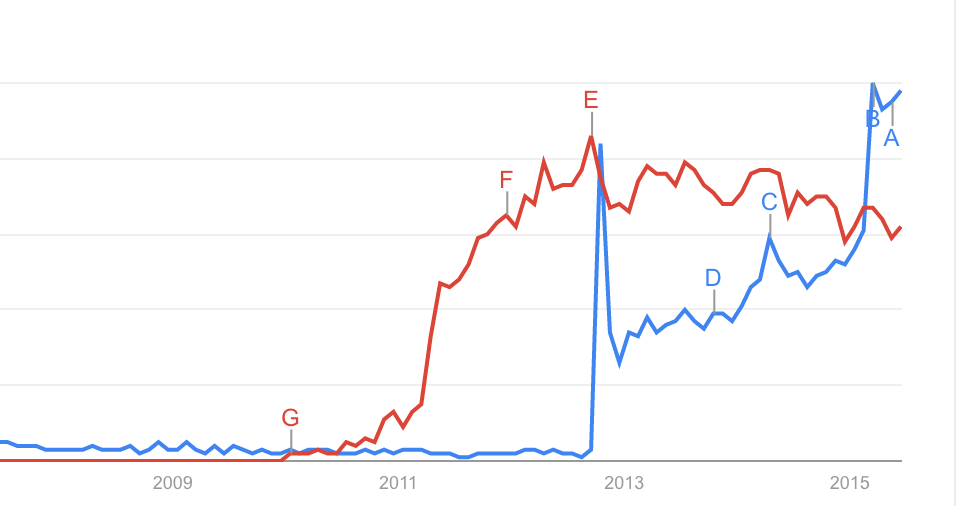
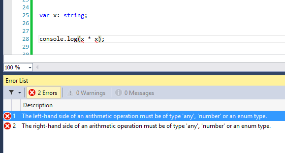

If you're already sold on TypeScript, skip to the next section :-)
Oh really?

Blue line is TypeScript, red line is CoffeeScript. TypeScript is currently exploding because at B Angular announced that they were using it in Angular 2.0. But you can see TypeScript was on a path to crush CoffeeScript even before that. :-)
The Microsoft of today is not the Microsoft of 10 years ago. Possibly to counteract the ill-will they've accrued over the years, Microsoft has done a lot of public, open-source good. In the past year alone, they've:
- Open-sourced C#
- Open-sourced core .NET
- Created Visual Studio Code, a cross-platform (!) version of Visual Studio
"Yeah, but Microsoft could still be evil. This could all be a long con to screw us over later. Somehow. Despite open sourcing all their core products and making them crossplatform." I think you're just being stubborn now. You must realize that recently they have been at worst an average amount of evil, probably less evil than Facebook and certainly less evil than Apple. And we use Facebook and Apple products all the time, so why not use an open source altjs that Microsoft put out?
Have you been on the front-end for a while? This reasoning applies to every technology we use. If you're using any JavaScript framework or CSS precompiler, you're probably using technologies that people are going to forget about one day.
I'd go as far as to suggest that TypeScript will have more longevity than other modern libraries: it is backed by both Microsoft and Google (through Angular 2.0), so I feel reasonably confident it's going to be around for a while longer.
"But JavaScript isn't going away!"
Are you sure?
Admittedly, this is true. But I don't think that better syntax is the metric upon which we should compare all programming languages. I think that what we should really care about is time saved programming. How much time do you lose fighting JavaScript's syntax? Not too much? A few moments ordering your )'s, ]'s, and }'s, perhaps - but then again, any code editor can usually handle that.
Now, how much time do you spend trying to do things that the compiler could assist you with, if only it had a little more information? How many times a day do you:
- forget the ordering of arguments to a function (that autocomplete could provide)?
- look up function documentation (that an IDE could provide you)?
- grep through source files for function references during a refactor (which an IDE will do with 100% accuracy)?
- spend 5-10 minutes on a bug before realizing you made a minor typo (that TypeScript wouldn't even compile)?
Imagine how much time you could save if an entire category of time-wasting problems just disappeared.
Is CoffeeScript an impendiment to hiring today? No? Was it ever? Were recruiters ripping their hair out, saying "if only I could just find a decent CoffeeScript engineer?" Of course not, because even if no one knew CoffeeScript, any competent programmer could learn it in half a day. That's a rounding error to the amount of time it takes to onboard programmers to a codebase.
Ok, it's great that you agree, because TypeScript is just as easy to pick up as CoffeeScript.
Let's start with the most important thing:
var x: string = "Hello TypeScript!";
console.log(x);
Congratulations! You just told the compiler that the variable x is a string. Now, if you start using it incorrectly, you'll get errors.
var x: string = "Hello!";
console.log(x * x);
Silly me, I forgot that I said x was a string literally one line ago!

Visual Studio helpfully pointing out our mistake.
Other basic JavaScript types work in mostly the same way. TypeScript has number and boolean types. It also has any, which is helpful for when you're porting JavaScript code and you want to get things to work first before refining the types.
TypeScript splits array types into two categories:
- lists that are arbitrarily long, but all elements are the same type (homogenous)
- lists that have a definite length, but elements could be of different types (heterogenous)
We naturally specify the types of these in different ways.
Easy: we use square brackets. If we have a list of numbers, we just say number[].
var testScores: number[] = [98, 82, 80, 91, 100, 36];
Say we have a list that represents a person. It is always 2 strings followed by a number - first name, last name and age. Then we'd do something like this:
var person: [string, string, number] = ["Some", "Person", 32];
Again, TypeScript splits objects into two categories, based on typical JavaScript usage. We have key-value objects that have arbitrarily many key-value pairs of the same type, and record type objects that have a fixed size, but without any guarantees on the contents.
var occupationsForPeople: {[key: string]: string} = {
"Some Guy": "Plumber",
"Other Guy": "Electrician",
"Third Guy": "Barista"
};
Let's rewrite our person object from before as an object instead of an array:
var guy: { firstName: string; lastName: string; age: number; } = { property: "foo" }
Hm, that looks fine, but you can't possibly be telling me that I have to write out a massive type specification every time I want to use a 3 key object, right?
You're right - that would be really dumb. A better idea would be to declare a new type called Person and then say that guy is a Person. To declare a new type, we use the interface keyword.
interface Person {
firstName: string;
lastName: string;
age: number;
}
From now on, we can just say that guy is a Person like normal:
var guy: Person = {firstName: "Some", lastName "Person", age: 32};
console.log(guy.firstName);
Remember, all type information is stripped away when we compile to JavaScript. TypeScript will know about this Person interface, JavaScript will not.
Notice that in every example I've given so far, if we were to strip away the type information, the TypeScript we write is exactly the same as any JavaScript we would write. This is typical. Remember, TypeScript is a superset of JavaScript.
You could just rename mycode.js to mycode.ts and it would compile! Then you could add in type annotations as necessary. This is the advantage of the superset approach.
Alright, let's talk a little about functions. In TypeScript, a function looks pretty much exactly like a function in JavaScript, except with type annotations! (Sounds familiar.)
function sayHello(name: string, age: number) {
console.log("Hello to " + name + ", a " + age + "-year-old organism!");
}
You can also specify that a variable is a function type. See here:
var getGreeting: (name: string, age: number) => string = function(name: string, age: number) {
return "Hello to " + name + ", a " + age + "-year-old organism!";
}
Alright, this looks quite redundant, but remember: we would not normally type out the function type, since TypeScript can infer it for us!
I'm sure you've used a library like jQuery that allow you to pass in, say, a string or a number into a function, and the function handles the two different types appropriately. For example, the css function of jQuery. In normal JavaScript:
$("#myElement")
.css("width", 50)
.css("display", "block");
We'd specify the type of css like so:
function css(propertyName: string, value: string|number): JQuery {
if (typeof value == "string") {
// handle string type
}
if (typeof value === "number") {
// handle number
}
}
Consider the following code:
function getDamageDealtByMonster(monsterType) {
if (monsterType === "Gremlin") {
return 2;
}
if (monsterType === "Goblin") {
return 1;
}
if (monsterType === "Dragon") {
return 10;
}
console.error("Whoops, bad monster type!");
}
If we were to port this code to TypeScript, we'd probably choose monsterType to be a string. But that leaves us with some problems - if you pass in an invalid monsterType, the code will just crash. A better choice would be to use an enumeration.
An enumeration allows you to say "this value can be one of a couple of discrete values." In the above case, we could say that monsterType could only be a gremlin, goblin or dragon. Here's how we would specify that in TypeScript:
enum MonsterType {
Gremlin,
Goblin,
Dragon
};
Now we can use MonsterType in our code, and any variable with that type can only take one of those 3 values.
function getDamageDealtByMonster(type: MonsterType) {
if (monsterType === MonsterType.Gremlin) {
return 2;
}
if (monsterType === MonsterType.Goblin) {
return 1;
}
if (monsterType === MonsterType.Dragon) {
return 10;
}
}
The best part about this is that we don't even need to have the console.error, because the type system ensures for us that only valid values get in.
Type annotations are one half of why TypeScript is cool. The other half is the new features coming in from ES6(+). I'll take you on a quick tour. Remember: these are all features that will land in JavaScript soon. You just get to use them sooner (and without having to worry about cross-browser compatibility).
Instead of writing this:
var numbers = [1, 2, 3, 4];
var squareNumbers = numbers.map(function(i, value) {
return value * value;
});
console.log(squareNumbers);
You can just write this:
var numbers = [1, 2, 3, 4];
var squareNumbers = numbers.map((i, value) => value * 2);
console.log(squareNumbers);
This will look familiar to anyone who's used CoffeeScript before. It may just be syntactic sugar, but if you try it out yourself, you'll find that when functions feel so lightweight and easy to make, you'll end up writing in a functional style more often. Previously obscure code that used map, filter and reduce will start to look - could it be? - almost readable!
I admit, this is straight up syntactic sugar. Still: it's very nice to have.
var numberOfProblems = 99;
var problemType = "TypeError";
console.log(`I got ${numberOfProblems} problems, but a ${problemType} ain't one.`);
Ah yes, OOP! Everyone loves OOP, right? Right..?
Well, regardless, classes are coming to JavaScript - and with them come a host of other associated features. Tap on the underlined words for descriptions.
class Person extends Entity implements ICanTalk {
public var height: number;
public constructor(
public var name: string,
protected var age: number,
private var hairColor: string
) {
this.sayHello();
)
public sayHello() {
console.log(`Hello from ${this.name}`);
}
public get description(): String {
return `This is ${this.name}, a ${this.age}-year-old fellow with ${this.hairColor} hair.`;
}
}
var nicePerson = new Person("Some Person", 32, "brown");
console.log(nicePerson.description);
The for...of loop allows you to loop over all the values in an array or an object. Again, this is nothing revolutionary - it's just convenient, especially after being burned by how we almost had for...in before we realized it was broken with arrays and objects with prototypical inheritance.
var myArray = [1, 3, 5, 7];
// Wow, it works just like you'd expect! Amazing!
for (value of myArray) {
console.log(myArray);
}
So much ink has been spilled over JavaScript's lack of proper scoping. Tell me a single other language in which this makes any sense at all:
console.log(x); // logs undefined
var x;
To say nothing of an abomination like this:
console.log(x); // still logs undefined!
if (false) {
var x;
}
It's so bad that JavaScript developers had to invent an obscure acronym IIFE (Immediately Invoked Function Expression) to describe the only way you could get sensible scope - by wrapping expressions in a function and then immediately calling that function. This is insane.
Fortunately, it doesn't have to be this way!
TypeScript has taken the let keyword from ES6. let works exactly the same way as variable declaration works in any sane language:
console.log(x); // error!
let x;